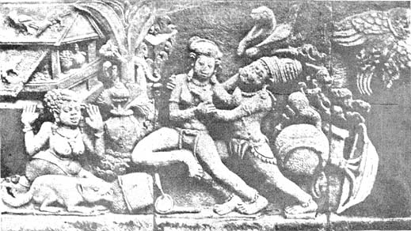
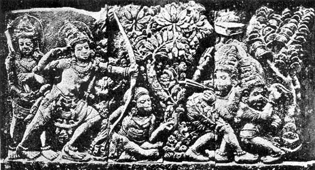

Selected Examples
of Hindu-Javanese Sculpture
Three Scenes from the Ramayana
BY T. N. RAMACHANDRAN, M.A.
The illustrations that we have selected here, are from the Siva temple in the plain of Prambanam in Central Java which was in the height of its artistic glory in the 8th and 9th centuries A. D. They stand to prove our conclusions detailed in the previous volumes of Triveni1 that Indian Art in the Archipelago is "a continuation and a development of the Indian creative genuis under colonial conditions."
The three photographs illustrated in this issue represent popular scenes from the Ramayana, their originals being sculptures assignable to late 9th century.
We have in the Frontispiece, sage Visvamitra visiting King Dasaratha and requesting him for the services of his divine son Rama against the rakshasas who were desecrating his sacrifices. The sage can be made out in the centre of the sculpture his seated with hands folded and resting on his lap. Though his face is defaced, it is evident from his pose that he is addressing or listening to Dasaratha on the left. The king is discerned by his crown with a halo behind it while his queen, probably Kausalya, also with a crown and a halo, is seated by his side. Their expression is one of painful contemplation and dilemma arising from the sage's request. A female attendant to the right of Kausalya in a kneeling attitude is evidently beseeching the sage to accept offerings of flowers and fruits. To the right of the sage is a group of three persons, the first of whom who is near to the sage is probably Rama because of the crown he wears. He is listening to the conversation arising also from the sage's request that the two others, perhaps Dasaratha's courtiers, are holding. The rest of the sculpture to the right of the group is not described here as it obviously relates to the next scene.

The Abduction of Sita
Prambanam
(Ninth century A. D.)
Plate I represents the abduction of Sita by Ravana. Ravana disguised as a sage is attempting to bear her away. Sita is repulsing, him and trying to escape to the hermitage on the left, in front of which the kneeling form of a forest woman, evidently her companion, (Rama and Lakshmana being away in quest of Maricha, the Golden Deer) can be made out with looks of consternation and utter helplessness. Behind Ravana is seen his begging bowl which he has cast away, while the vessel from which Sita intended to serve food to the mock-saint is thrown in the foreground, the centents of which a squirrel is nibbling at. The ladle lies by its side. A chamara and a chhatra lying awry behind Ravana indicate the status of Ravana–that of a monarch in a saint's garb.

Death of Vali
Prambanam
(Ninth century A. D.)
Plate II portrays the fight between the brothers Sugriva and Vali in which the latter was killed by Rama hidden behind a grove of trees. On the left behind the grove are Rama and Lakshmana, the former in action. On the right Vali and Sugriva are engaged in their deadly fight, the latter wearing a wreath of leaves to enable Rama to distinguish him. And Rama being guided by this wreath has discharged his fatal arrow which is seen fast approaching the ill-fated Vali. Between the parties, the fighting brothers on one hand and the divine brothers on the other, is the seated figure of a forester watching with interest the fight.
1
Vol. IV., Nos., 4 and 5; Vol. V., Nos., 2 and 3. BACK